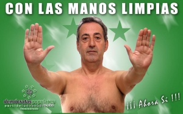

Pecholobo Balboa
 De: La Frikipedia, la enciclopedia extremadamente seria.
De: La Frikipedia, la enciclopedia extremadamente seria.
 Pecholobo Balboa, líder espiritual de la zona.
Fuenlabrada cuenta con una gran parte del territorio invadido por Pecholobo Balboa, en el que reina la paz y la prosperidad, y todo el mundo es de color de rosa, y pelo de vieja.
También conocido como "el desnúo" o "el señor mayor de pelo en pecho" nos ha ofrecido imágenes seductoras y sugerentes desde el comienzo de su precampaña, alegrando la vista a los jóvenes y jóvenas de la región.
Su proyecto faraónico consiste en la creación de un tranvía, túneles, paz, flores, colegios y amor para todos. Dicen de él que es un enviado de Diox para santificar al planeta, como en su día hizo Jesús de Nazaret, su hermano.
De hecho, el pelo del sobaco, aparenta ser el mismo.
Principal accionista de la Frikipedia, se define como un tipo joven, atrevido, dicharachero y metrosexual, con una sonrisa dibujada que ilumina al mundo.
Es el único ser que ofrece caramelos sin droga a los niños. Queda demostrado que los que reparten "los otros" contienen elevadas cantidades de tetraoxoarseniato (V) de plomo (II).
Biografía
Nacido en el año Teresa de Calcuta, Mao, o Jesús Gil con el único objetivo de traer la paz a este mundo. Ahora, en la mitad de su vida, decide empezar a pacificar a nivel local, para poco a poco, liderar el mundo, imperando el gobierno de los crisantemos y otras flores doradas, en la figura de Pecholobo Balboa.
Fuenla ha sido la humilde ciudad elegida para comenzar su andadura santificadora, y ya ha ganado ingentes cantidades de adeptos, levantando envidias de otros aspirantes a Dios, como bien podemos ver en su contrincante malvado y sin pelo, cuyo nombre quedará bajo el más profundo anonimato. (--> Filemón Pi <--)
Actos heroicos
Pecholobo Balboa, con el poder de salvar a la Humanidad con una simple firma.
- Dominar el mundo.
- Salvar el mundo.
- Defender la patria.
- Sostener el peso de la Tierra con la fuerza sus hombros.
- Satisfacer los deseos de las jovenzuelas del planeta.
- Repartir globos.
- Sonreirte al pasar.
- Salvar vidas.
- Salvar vidas junto a Pamela Anderson.
- Crear al barbudo de Bricomanía.
- Destruir al Flores de Bricomanía.
- Dirigir, presidir y producir La Sexta, ese canal lleno de felicidad y cambios de horario.
- Criar malvas (en sentido no figurado).
- Protagonizar Rocky VI bajo el pseudónimo de Rocky Balboa.
- Mandarte un beso desde esta misma página.
- Caminar desprovisto de vestimenta.
- Conseguir que NO existan fotos suyas con ropa.
- Forrar el mundo de carteles con fotos suyas sin camiseta.
Palabras de Pecholobo
- "Me amarás sobre todas las cosas"
- "Yo me lavo las manos".- Antes del asesinato de su hermano.
- "No tomarás mi nombre en vano"
- "Yo tengo las manos limpias".- Tras el asesinato de su hermano.
- "Santificarás mis fiestas patronales"
- "¿Quieres un globo?".- A los niños, que le adoran.
- "Oye cariño, ¿seguro que estoy usando bien la cera para depilarme?"
- "Honrarás a mi padre y a mi madre".- Demostrando su afecto hacia Don Ramón, padre y a la vez hijo de Pecholobo Balboa.
- "¡Ahora sí! Antes no..."
- "No me matarás".- Ante Sauron, en la última batalla contra la fuerza del anillo.
- "¡Tranvía para todos!"
- "No cometerás actos impuros sin mí"
- "¡Espiña va bien!".- Durante los 5 años de República, en uno de sus discursos.
- "No me robarás".- Alguno de los supervillanos ya lo hizo, y por tanto, irá al infierno.
- "Tengo, tengo, tengo..., ¡y tú no tienes nada!".- Demostrándonos la inmensidad de su poder.
- "No me dirás falso testimonio ni me mentirás"
- "¡Viva el Rey!".- Ante todo, juancarlista, felipista y leonorino borbónico.
- "No consentirás pensamientos ni deseos impuros hacia mi persona"
- "Así me lo aprendí yo".- En uno de sus viajes por el continente asiático.
- "No codiciarás los bienes de Pecholobo"
- "Por una mirada, un mundo; por una sonrisa, un cielo; por un beso... ¡Yo no sé que te diera por un beso!".- En una de sus últimas reencarnaciones.
¡Existe en el mundo real!
He aquí las pruebas fehacientes de que Pecholobo Balboa existe más allá de esta web:
Autor(es):
- Doctor grijander
- Paco
- Alex el Mono
- Comentaristainformal
- Dancob
- CosmeFulanito
- Generibot
- Thejubby
Frikipedia 2005-2016, Licencia
GFDL 1.2 - Extraído por FrikiLeaks